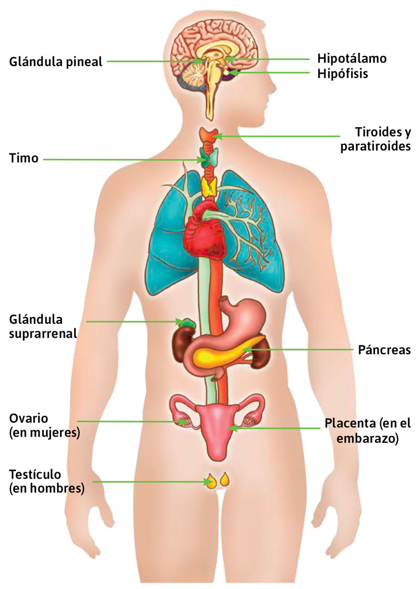
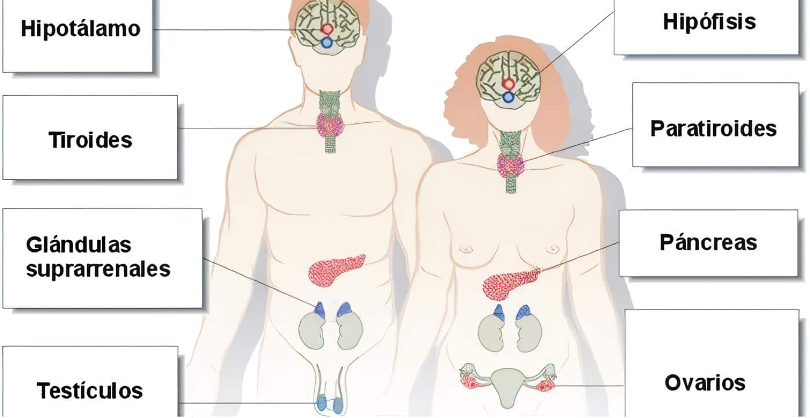
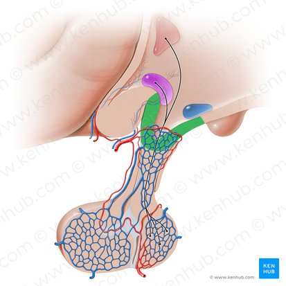
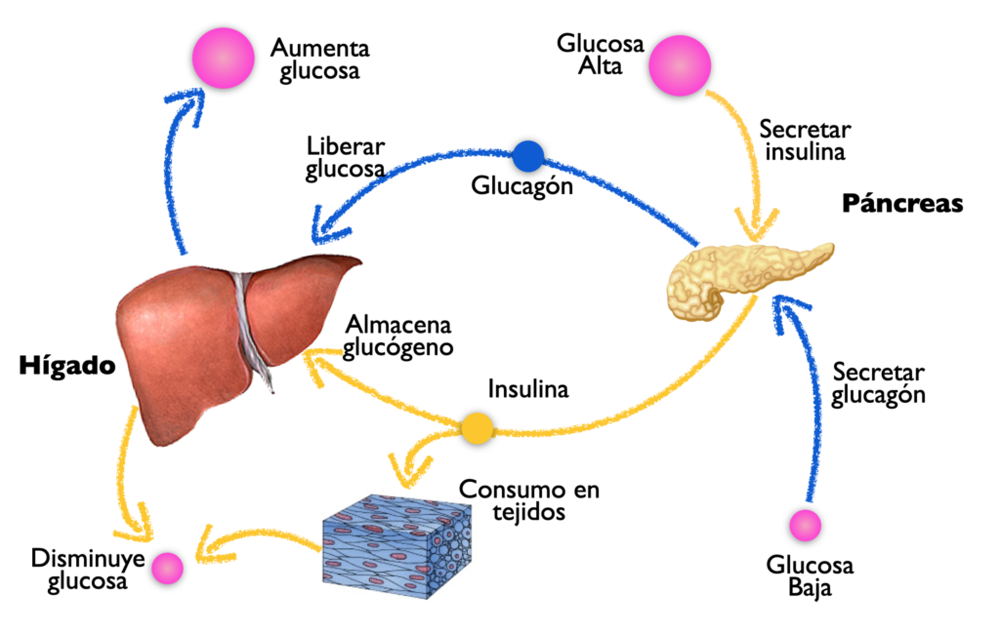
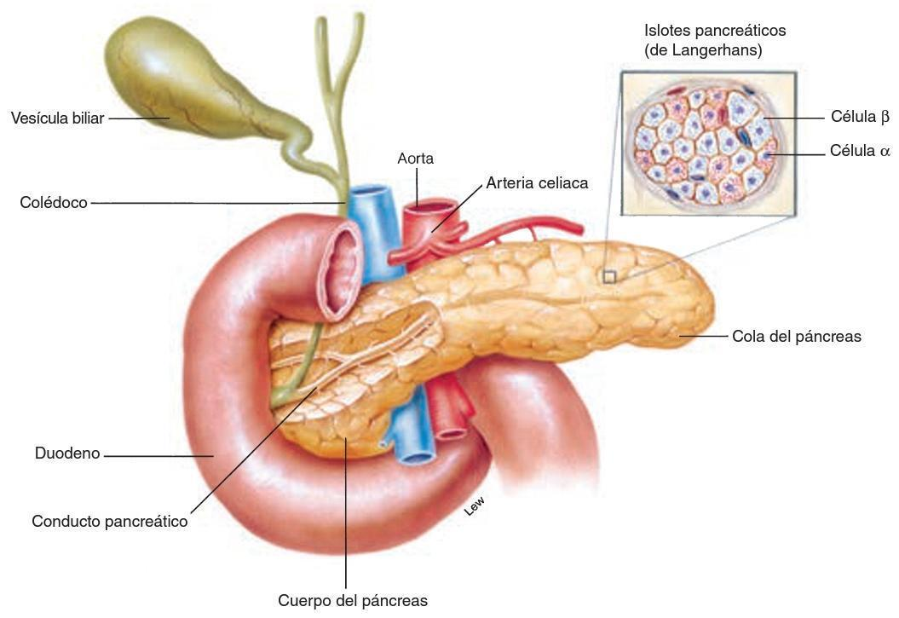
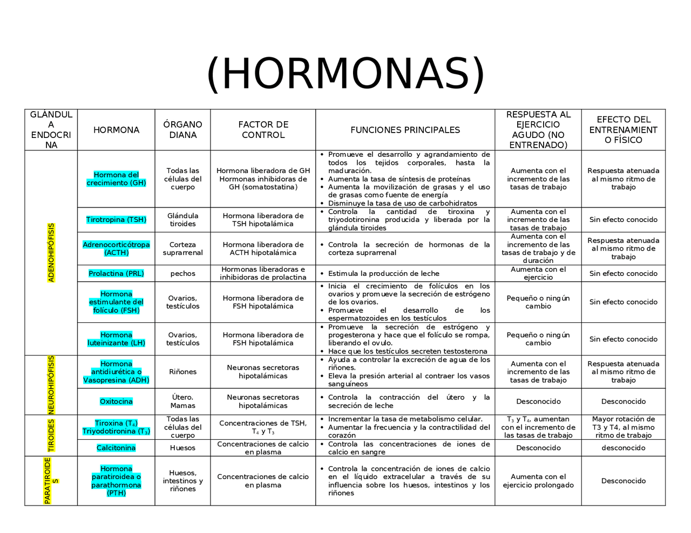
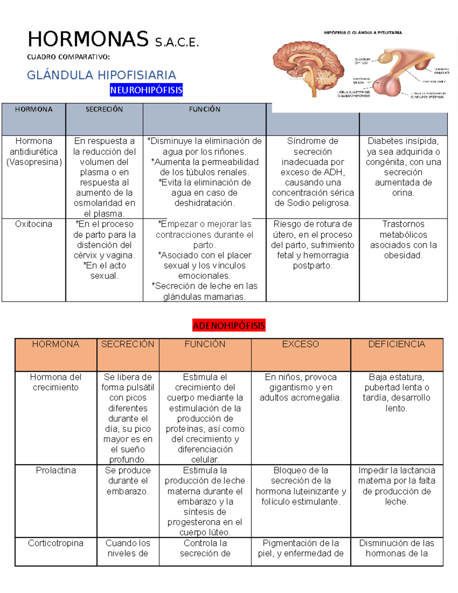

🧬 ¿Qué es el Sistema Endocrino?
El sistema endocrino es el conjunto de glándulas que producen y secretan hormonas directamente al torrente sanguíneo. A diferencia del sistema nervioso, que usa impulsos eléctricos rápidos, el endocrino actúa mediante mensajeros químicos lentos pero de larga duración. Juntos, ambos sistemas mantienen la homeostasis: el equilibrio interno del cuerpo.
Las hormonas viajan por la sangre hasta sus órganos diana, donde se unen a receptores específicos y desencadenan respuestas. Un pequeño cambio hormonal puede tener efectos enormes: desde regular la temperatura corporal hasta controlar el metabolismo, el crecimiento, la reproducción y las emociones.
🎯 Objetivos de Aprendizaje
Al finalizar este tema serás capaz de: identificar las principales glándulas endocrinas y sus hormonas, explicar la diferencia entre sistema endocrino y nervioso, describir el mecanismo de retroalimentación hormonal, comprender el papel de la insulina y el glucagón en la regulación de la glucosa, y reconocer las principales enfermedades endocrinas.
🗺️ Anatomía del Sistema Endocrino
El sistema endocrino está formado por aproximadamente 10 glándulas principales distribuidas por todo el cuerpo. Algunas son puramente endocrinas (solo producen hormonas), mientras que otras tienen funciones mixtas (endocrina y exocrina).

Figura 1: Sistema endocrino humano con glándulas principales etiquetadas. Fuente: Quizlet.

Figura 2: Comparación del sistema endocrino en hombre y mujer. Fuente: Encolombia.
🫀 Las Glándulas y sus Hormonas
🧠 Hipotálamo e Hipófisis: El Centro de Mando
El hipotálamo, ubicado en el cerebro, es el "termostato" del cuerpo. Controla la temperatura, el hambre, la sed, el sueño y las emociones. Produce hormonas liberadoras e inhibidoras que regulan a la hipófisis. La hipófisis (pituitaria), del tamaño de un guisante, se divide en adenohipófisis (lobulo anterior) y neurohipófisis (lobulo posterior), y secreta hormonas que controlan otras glándulas.

Figura 3: Anatomía de la hipófisis y su conexión con el hipotálamo. Fuente: Kenhub.
🧠 Adenohipófisis (Anterior)
Produce GH (crecimiento), TSH (tiroides), ACTH (suprarrenales), FSH/LH (reproducción), prolactina (lactancia). Controlada por el hipotálamo.
🧠 Neurohipófisis (Posterior)
Almacena y libera ADH (vasopresina, controla agua en riñones) y oxitocina (contracciones uterinas, vínculo afectivo). No produce hormonas, solo las libera.
🦋 Tiroides
En el cuello, produce T3 y T4 (regulan metabolismo, temperatura, energía) y calcitonina (reduce calcio en sangre). Controlada por TSH de la hipófisis.
🫁 Paratiroides
Cuatro glándulitas detrás de la tiroides. Producen PTH (hormona paratiroidea), que eleva el calcio sanguíneo. Esencial para huesos y nervios.
🫘 Suprarrenales (Adrenales)
Sobre los riñones. Corteza: cortisol (estrés), aldosterona (sodio/potasio), andrógenos. Médula: adrenalina y noradrenalina (respuesta de lucha o huida).
🍯 Páncreas Endocrino
Los islotes de Langerhans producen insulina (baja glucosa), glucagón (sube glucosa) y somatostatina. Fundamental para la diabetes.
🌙 Glándula Pineal
En el cerebro. Produce melatonina, que regula el ciclo sueño-vigilia (ritmo circadiano). Secreta más melatonina de noche.
🛡️ Timo
En el pecho, detrás del esternón. Produce timoisinas que maduran los linfocitos T (células del sistema inmune). Es más grande en la infancia.

Figura 4: Regulación de la glucosa: insulina (glucosa alta) y glucagón (glucosa baja). Fuente: Laboratorio de Biofísica UAM.

Figura 5: Islotes pancreáticos de Langerhans: células α (glucagón) y β (insulina). Fuente: GoConqr.
Glándulas Sexuales (Gónadas)
Las gonadas producen hormonas sexuales esenciales para el desarrollo, la reproducción y las características secundarias:
- Ovarios (mujer): Estrógenos (desarrollo femenino, ciclo menstrual) y progesterona (embarazo, preparación del útero).
- Testículos (hombre): Testosterona (desarrollo masculino, espermatogénesis, masa muscular, voz grave).
- Placenta (embarazo): Produce hCG, progesterona y estrógenos para mantener el embarazo.
📊 Tabla de Hormonas Principales

Figura 6: Tabla comparativa de las principales hormonas endocrinas. Fuente: Docsity.

Figura 7: Hormonas de la hipófisis: neurohipófisis y adenohipófisis. Fuente: Studocu.
⚖️ Retroalimentación Hormonal
El sistema endocrino se autorregula mediante mecanismos de retroalimentación negativa: cuando un nivel hormonal es alto, se inhibe su propia producción; cuando es bajo, se estimula. Es como un termostato que apaga la calefacción cuando la temperatura es alta y la enciende cuando baja.
🔁 Ejemplo: Eje Hipotálamo-Hipófisis-Tiroides
1. El hipotálamo detecta bajos niveles de T3/T4 y libera TRH.
2.
La hipófisis recibe TRH y libera TSH.
3. La tiroides recibe TSH y produce más
T3/T4.
4. Cuando T3/T4 son suficientes, inhiben al hipotálamo e hipófisis
(retroalimentación negativa).
Este mecanismo evita que las hormonas alcancen niveles
peligrosos.
¿Sabías que...?
El cortisol (hormona del estrés) tiene un patrón circadiano: sus niveles son más altos al despertar (para activarte) y más bajos al anochecer. Por eso, el estrés crónico altera el sueño: el cortisol elevado de noche "engaña" al cuerpo haciéndole creer que es de día.
⚠️ Enfermedades del Sistema Endocrino
| Enfermedad | Causa | Síntomas Principales |
|---|---|---|
| Diabetes Mellitus Tipo 1 | Autoinmune: destrucción de células β pancreáticas. Sin insulina. | Sed extrema, micción frecuente, pérdida de peso, fatiga. Requiere insulina inyectada. |
| Diabetes Mellitus Tipo 2 | Resistencia a la insulina + producción insuficiente. Ligada a obesidad y sedentarismo. | Sed, visión borrosa, heridas lentas, fatiga. Controlable con dieta, ejercicio y medicamentos. |
| Hipotiroidismo | Tiroides poco activa. Poco T3/T4. | Fatiga, aumento de peso, intolerancia al frío, piel seca, depresión. Tratamiento: levotiroxina. |
| Hipertiroidismo | Tiroides hiperactiva. Mucho T3/T4. | Pérdida de peso, nerviosismo, taquicardia, intolerancia al calor, ojos saltones (enfermedad de Graves). |
| Enanismo (hipopituitarismo) | Deficiencia de hormona del crecimiento (GH) en la infancia. | Baja estatura proporcionada, retraso en desarrollo óseo. Tratable con GH sintética. |
| Gigantismo/Acromegalia | Exceso de GH. Gigantismo en niños, acromegalia en adultos. | Crecimiento excesivo de huesos y órganos, manos y pies grandes, mandíbula prominente. |
| Síndrome de Cushing | Exceso de cortisol (por tumor suprarrenal o medicamentos). | Obesidad central, cara redonda (luna), estrías púrpuras, osteoporosis, hipertensión. |
| Enfermedad de Addison | Insuficiencia suprarrenal. Poco cortisol y aldosterona. | Fatiga extrema, pérdida de peso, piel hiperpigmentada, hipotensión. Puede ser mortal sin tratamiento. |
¿Sabías que...?
La insulina fue descubierta en 1921 por Frederick Banting y Charles Best en la Universidad de Toronto. Antes de su descubrimiento, la diabetes tipo 1 era una sentencia de muerte. El primer paciente tratado, un niño de 14 años llamado Leonard Thompson, estaba al borde de la muerte y recuperó la vida. Banting recibió el Premio Nobel en 1923.
🤯 Datos Curiosos sobre el Sistema Endocrino
¿Sabías que...?
La oxitocina se conoce como la "hormona del amor" porque se libera durante el abrazo, el parto y la lactancia. Pero también tiene un lado oscuro: en situaciones de conflicto social, puede aumentar la agresión hacia personas de fuera del grupo. No es solo "amor", es "lealtad al grupo".
¿Sabías que...?
La melatonina de la glándula pineal es tan sensible a la luz que simplemente encender una lámpara de noche puede reducir su producción en un 50%. Por eso los expertos recomiendan evitar pantallas (celular, TV) antes de dormir: la luz azul "engaña" al cerebro haciéndole creer que es de día.
¿Sabías que...?
El timo es una de las pocas glándulas que se encoge con la edad. En la infancia es grande y activo (madurando linfocitos T), pero después de la pubertad se atrofia y es reemplazado por tejido graso. Por eso, los niños tienen un sistema inmune más "flexible" para aprender, mientras que los adultos dependen más de la memoria inmunológica.
¿Sabías que...?
La adrenalina (epinefrina) puede aumentar la fuerza muscular temporalmente en situaciones de emergencia. Hay casos documentados de personas que levantaron automóviles para rescatar a alguien bajo ellos. La adrenalina dilata las pupilas, acelera el corazón, redirige sangre a músculos y cerebro, y suprime el dolor: todo para sobrevivir.